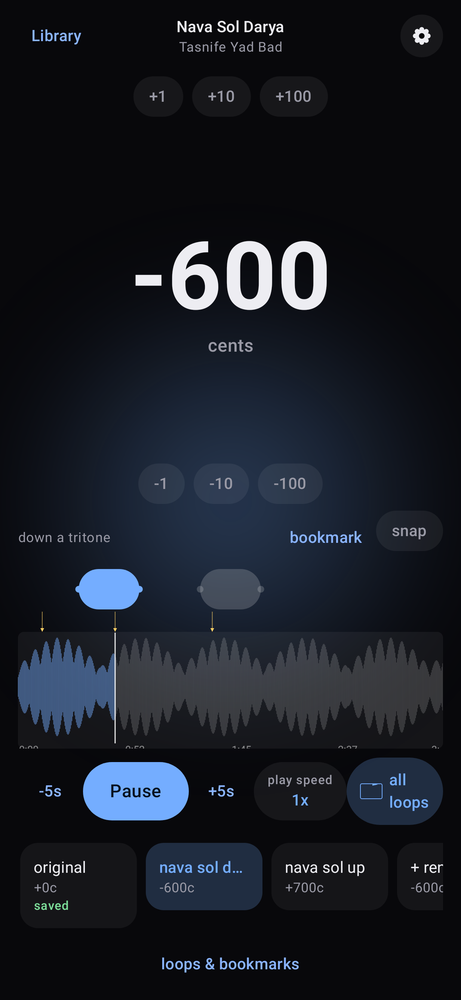
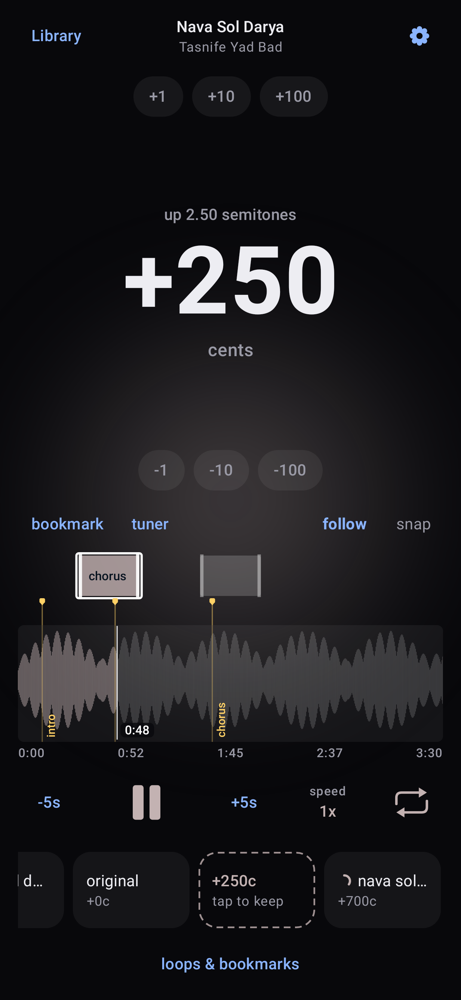
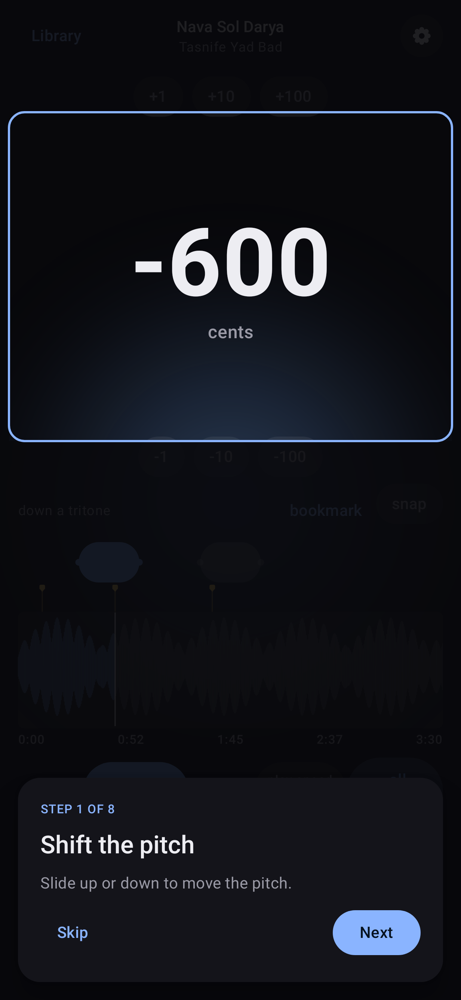
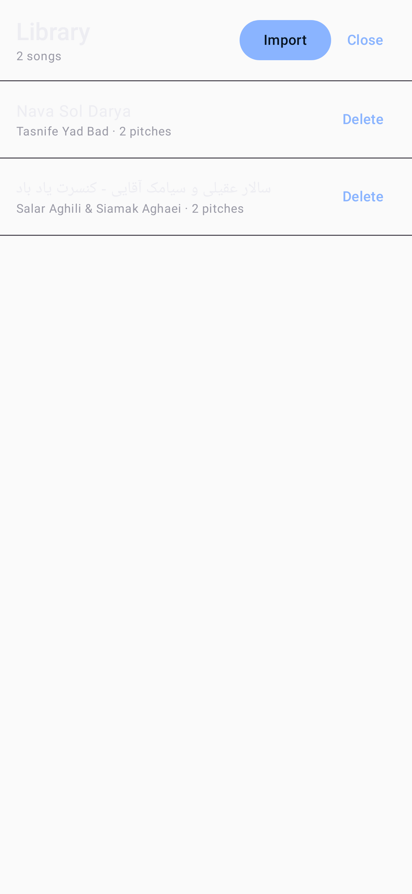

Free and open source
Change the key of any song. Keep the tempo.
pitcher moves music up or down by any interval, from a full octave to a single cent, while the rhythm stays exactly where it was. Find the key with the built-in tuner, loop and slow down the hard parts, and save the version you need as a file you can share.

Made for people who make music
The same song, in the key that works for you.
Singers
Bring a song into your range. Try a few keys by ear, keep the ones that fit, and save a backing track in the key you will perform.
Players
Play along with a recording that was tuned differently or capoed, or move a tune to a key that suits your instrument. Shifts can be as small as one cent.
Learners and teachers
Loop a passage, slow it down without changing the pitch, and mark the places you want to come back to. Save a practice file at the slower speed.
How it works
Three steps, all on your phone.
-
Open a song
Import an audio or video file, or share one into pitcher from any other app. Only the audio is kept.
-
Find your pitch
Slide up or down on the screen and hear the change as the song plays. Or let the tuner name the note you hear, choose the note you want, and apply the interval in one tap.
-
Keep it and save it
Keep the pitches you like. Each one is prepared in the background, so saving it as a file or sharing it is quick.
Features
Everything in the Android app, version 2.6.
- Shift by any amount from one octave down to one octave up, in cents or semitones
- A full-screen pitch control: slow movements are fine, fast ones are coarse, and snap lands on semitones
- The interval is spelled out as you go, for example "up a minor third"
- A tuner that detects the note at the playhead or at a bookmark, keeping the exact cents
- Loops for the passages you practice, repeated one at a time or in sequence
- Bookmarks with names, shown right on the waveform
- Play speed from half to double, without changing the pitch
- A shelf of kept pitches, one tap to switch between them
- Save or share as WAV, MP3, M4A, or Opus, the whole song or just your loops
- Save at your practice speed when you want a slower file
- Files sound exactly like the preview, because both use the same engine
- Playback continues in the background and pauses for calls

A closer look
A short guided tour points out every control the first time you open a song. You can replay it from Settings.


Your music stays on your phone
The Android app has no network permission at all. Nothing is uploaded, nothing is tracked, and there is no account to create. Files you save go to your Music folder, or to any folder you choose.
On your computer
pitcher also runs on Linux as a command line tool and a local web app, using the Rubber Band library for studio-quality shifting with formant preservation.
Command line
Shift files, detect notes, and keep a shelf of versions from the terminal. Good for batches and scripts.
Web app
A browser interface with a waveform, a pitch fader, a tuner, and a shelf of versions. It runs on your own machine, so your audio never leaves it.
See the web app →# Debian or Ubuntu
sudo apt install rubberband-cli librubberband-dev aubio-tools libaubio-dev ffmpeg yt-dlp
cargo build --release
./target/release/pitcher pitch in.wav out.wav --cents -100 --formant
./target/release/pitcher detect in.wav --at 12.3
./scripts/pitcher-web.sh # opens the web app on a free local portInstall on Android
-
Download
Get
pitcher-android-v2.6.4.apkfrom the latest release. -
Install
Open the file on your phone. Android asks once to allow installs from your browser or file manager.
-
Update
New versions install over the old one and keep your songs and pitches. Requires Android 10 or newer.
Questions
Does changing the pitch change the speed?
No. The tempo stays exactly the same. Speed is a separate control, and it never changes the pitch either.
How small a change can I make?
One cent, a hundredth of a semitone. That is enough to match a recording that is slightly out of standard tuning.
Will the saved file sound like what I heard?
Yes. Playback and saved files use the same shifting engine, so the file matches the preview.
Which formats can I save?
WAV, MP3, M4A, and Opus. You can save the whole song or only your loops, joined into one file, at normal speed or at your practice speed.
Does it need the internet?
No. The Android app works completely offline and cannot reach the network.
Is it really free?
Yes. pitcher is free and open source software under the GPL-3.0 license. There are no ads, purchases, or subscriptions.
About
pitcher is free software under the GPL-3.0 license. Everything it ships is free and open source. On Android it shifts with the Sonic engine from Android's Media3 library and uses Android's own open-source codecs, never a phone maker's closed-source codec unless the phone has nothing else. On the desktop it uses the Rubber Band library. Use it with audio you have the right to process.